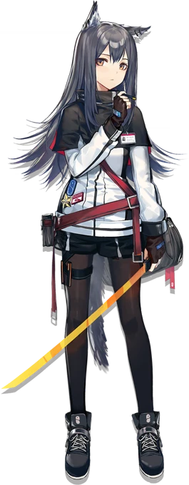
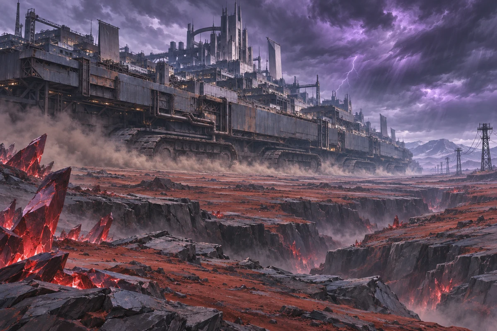
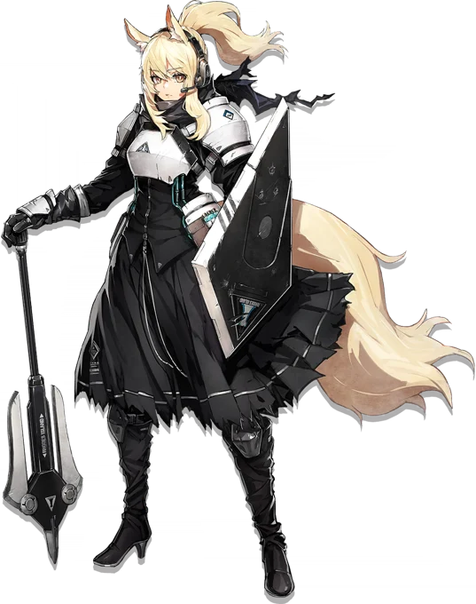
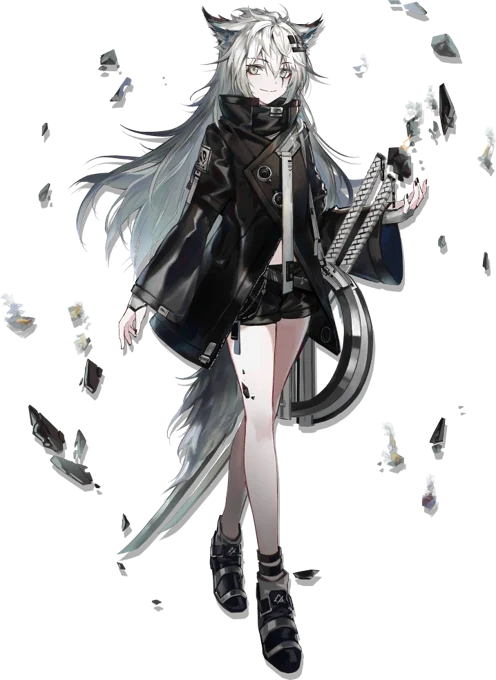
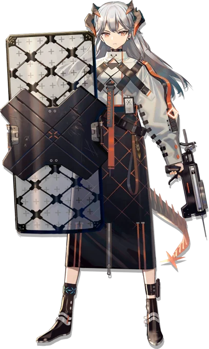
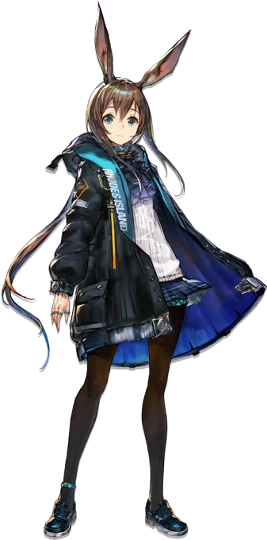
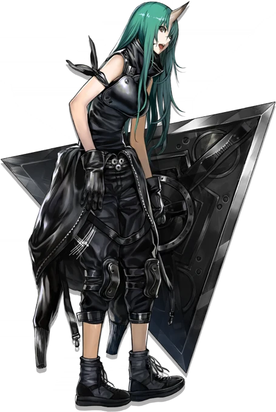
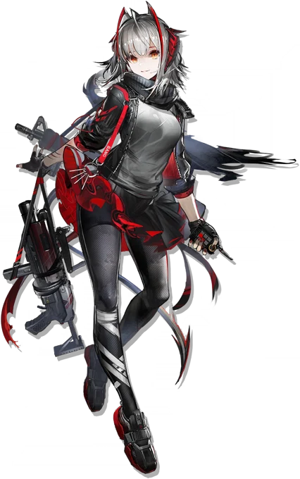

RHODES ISLAND / FAN ARXIVI
ARKNIGHTS
Terra olamiga xush kelibsiz, Doktor.
Originium, Oripathy va ularning ortidagi ziddiyatlar. Operatorlar bilan tanishing va Arknights hikoyasini o‘yin hamda anime orqali kashf eting.
RHODES ISLAND
Operatorlar
Global va CN o‘yin ma’lumotlari asosidagi katalog. CN filtrida Global ma’lumotida yo‘q Operatorlar chiqadi. Operatorlarni ismi, sinfi va fraksiyasi bo‘yicha toping.
TARKIB
Jamoa tuzuvchi
12 tagacha Operator tanlang. Tarkib shu brauzerda saqlanadi.
YANGI DOKTORLAR UCHUN
Doktor qo‘llanmasi
Jangni qanday boshlash kerak?
- Yo‘llarni va dushmanlar kiradigan nuqtalarni ko‘ring. Ularni himoya nuqtasiga yetmasidan to‘xtatish kerak.
- Avval Vanguard qo‘yib, ko‘proq joylashtirish ochkosi (DP) yig‘ing.
- Defender bilan yo‘lni to‘sing. Medic’ni ittifoqchilar uning davolash hududida bo‘ladigan qilib yo‘naltiring.
- Sniper yoki Caster bilan zarar qo‘shing. Sniper uchuvchi nishonlarga, Caster esa jismoniy himoyasi yuqori dushmanlarga qarshi foydali.

Operator sinflari
Boshlang‘ich jamoa namunasi
Ushbu 3–4 yulduzli Operatorlardan iborat tarkibni xarita va mavjud Operatorlaringizga qarab o‘zgartiring.
- Vanguard Fang, Courier
- Defender Beagle, Cuora
- Sniper Kroos, Jessica
- Caster Steward, Lava
- Medic Ansel, Hibiscus
- Guard Melantha
- Specialist Shaw
Nega yutqazdim?
DP yetmayapti
Og‘ir Operatorlardan oldin DP ishlab chiqaradigan Vanguard qo‘ying. Arzon Sniper bilan dastlabki to‘lqinga yordam bering.
Dronlar o‘tib ketyapti
Marksman’ni baland katakka qo‘yib, hujum yo‘nalishi dronlar uchadigan yo‘lni qamrashini tekshiring.
Defender tez yiqilyapti
Medic’ni Defender uning davolash hududida qoladigan qilib joylashtiring. Dushman Arts zarari bersa, qarshilik xususiyatiga ham qarang.
Og‘ir zirhli dushman o‘tib ketdi
Jismoniy hujumlar kam zarar qilsa, Caster’ni qo‘shing. Defender dushmanni Caster hujum hududida ushlab turishi uchun joy tanlang.
OLAM
Terra
Originium Terra sanoatining asosiy resurslaridan biri. U Oripathy kasalligi bilan ham bog‘liq. Kasallanganlar ko‘plab hududlarda kamsitilish va ta’qibga duch keladi.
TERRA ATLASI
Rhodes Island
Oripathy bo‘yicha izlanadigan va kasallanganlarga yordam beradigan farmatsevtika tashkiloti. Uning bazasi harakatlanuvchi kemada joylashgan.

Terra ensiklopediyasi

KazimierzRitsarlar va musobaqalar
SiracusaOilalar va shaharlar
ColumbiaRhine Lab va tadqiqotlarTerra lug‘ati
Originium
Terra sanoati va Arts bilan bog‘liq mineral. Uning ta’siri Oripathy xavfini oshiradi.
Oripathy
Originium bilan bog‘liq, to‘qimalarda kristallanishga olib keluvchi kasallik. Terra jamiyatidagi ko‘plab mojarolar kasallanganlarga munosabat bilan bog‘liq.
Catastrophe
Terra hududlariga zarar yetkazadigan va Originium qoldiqlarini tarqatishi mumkin bo‘lgan tabiiy ofatlar.
Ko‘chma shahar
Ofat yo‘lidan qochish uchun ulkan platformalarda joylashgan shahar. Chernobog va Lungmen bunga misol.
YOSTAR PICTURES
Anime mavsumlari
Arknights animesini shu tartibda tomosha qiling.
-
1-mavsum · 2022

Prelude to Dawn
Doktorning uyg‘onishi va Chernobogdagi qutqaruv operatsiyasi.
1-mavsum qismlari -
2-mavsum · 2023

Perish in Frost
Rhodes Island va Reunion o‘rtasidagi to‘qnashuvda FrostNova markazga chiqadi.
2-mavsum qismlari -
3-mavsum · 2025

Rise from Ember
Chernobog inqirozi chuqurlashadi va Amiya og‘ir tanlovga duch keladi.
3-mavsum qismlari
Tomosha kuzatuvchisi
Belgilar shu brauzerda saqlanadi.
Anime voqealar chizig‘i
Mavsumning barcha qismlarini belgilaganingizdan keyin uning voqealarini ochib o‘qishingiz mumkin.
Crunchyroll’da ochishSIMULYATOR
Birinchi jang
Vanguard va Defender faqat yo‘lga qo‘yiladi. Medic yonma-yon turgan Operatorni davolaydi. Har yurishda dushmanlar siljiydi va 1 DP olasiz.
- Yurish
- DP
- Himoya
- To‘xtatildi
O‘YIN
Birinchi operatsiyangiz
Operatorlarni xaritaga joylashtirib, dushmanlarning belgilangan nuqtaga yetib borishini to‘xtating. Dastlab Vanguard bilan joylashtirish ochkosi to‘plang, Defender bilan yo‘lni to‘sing va Medic bilan jamoani davolang.